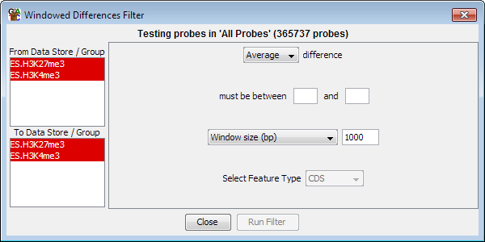

Windowed Probe Value Difference Filter
The windowed value difference filter acts in a very similar way to the
Individual Probe Value Difference Filter
except that it tests the differences of the averages the values of
all probes in a window.

Options
- You need to select two or more DataStores from the list on the left. Data
Sets are shown in red and Data Stores are shown in Blue.
- You can select an upper and a lower limit for the range of differences you want
to include. You only have to specify one of these values. If you leave the lower
value blank then anything under the upper cutoff will pass. If you leave the upper
value blank then anything above the lower cutoff will pass. All differences are
absolute values so you don't need to specify negative values in the filter.
- You can select how to construct the windows inside which the value difference test will
be performed. This can be expressed either as a fixed number
of bases, or as a number of consecutive probes to slide over the genome. You can also choose to use a class of
features as the windows in which to aggregate probes.
- If you have selected more that two DataStores then all pairwise combinations will
be tested. You need to specify whether the filter range applies to the average,
maximum or minimum difference seen.